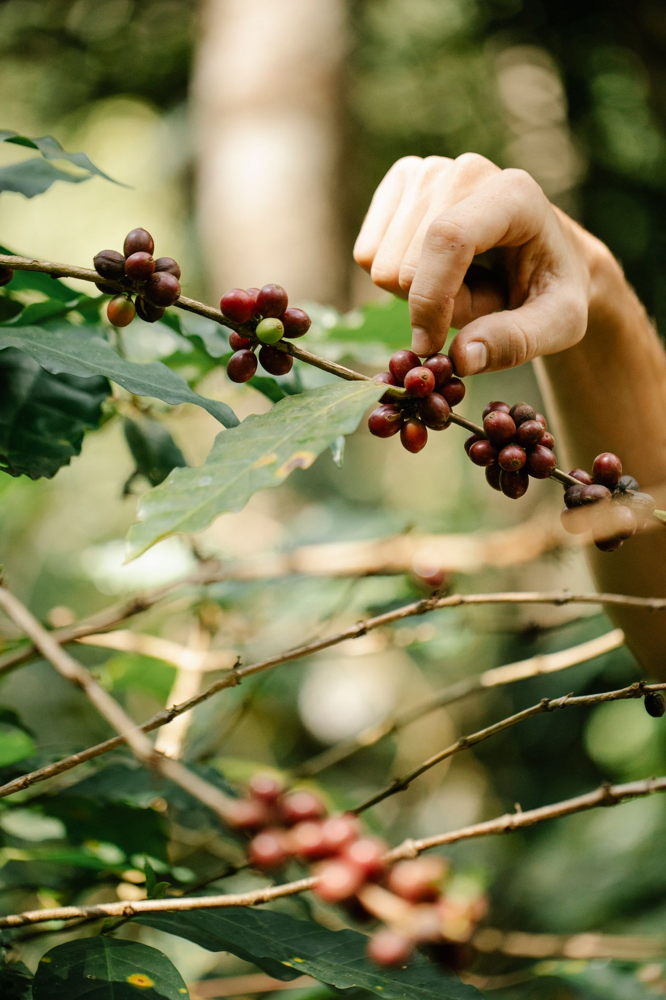
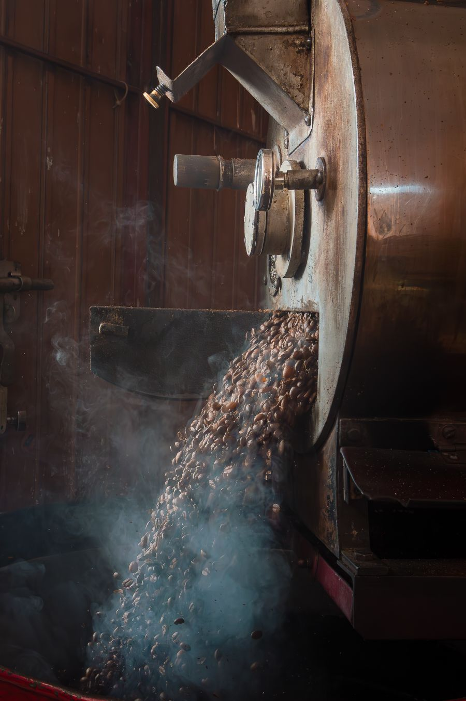
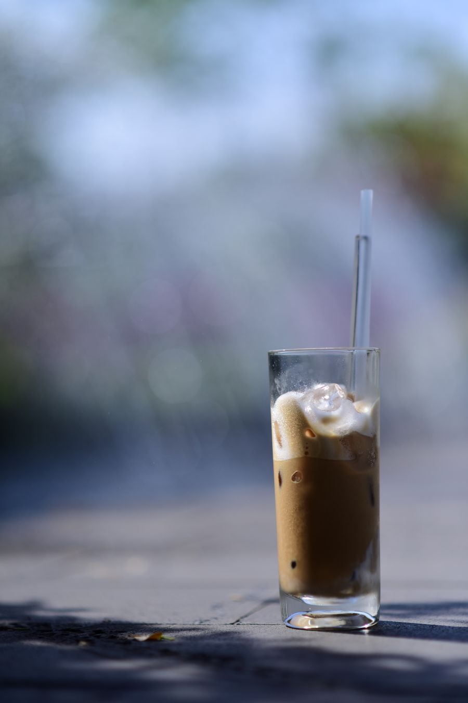
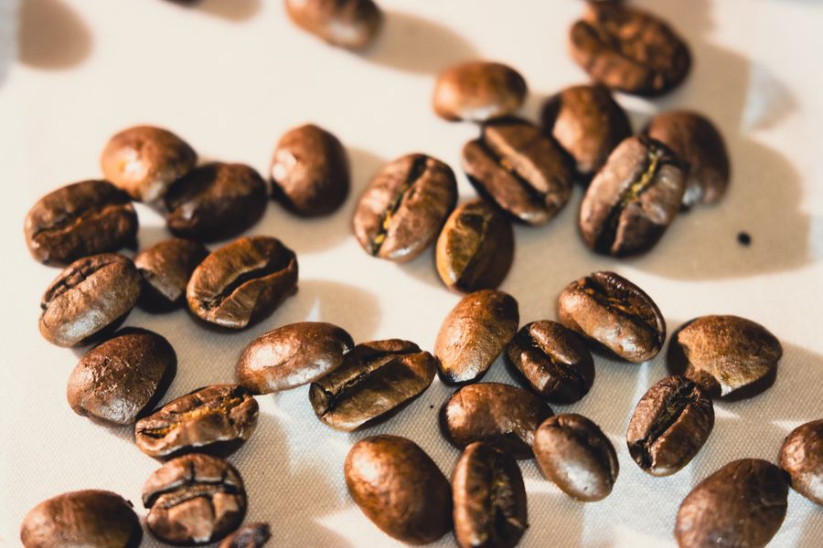
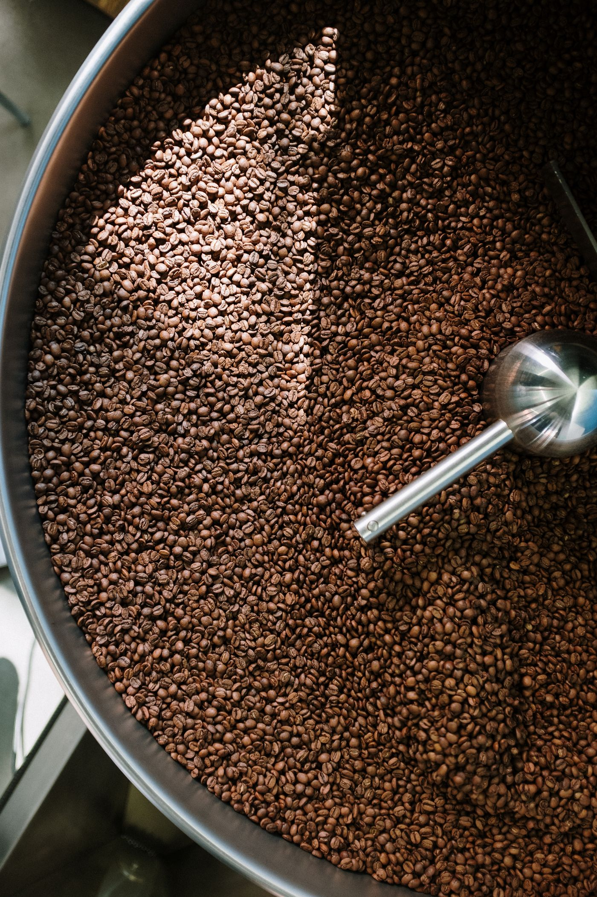
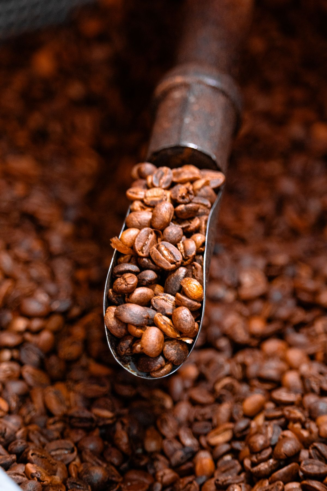

The coffee behind every cup
Every bag on our shelf is chosen, cupped and approved before it earns a place at miau. Here's what's currently in rotation — all available to drink in, or take home by the bag.
Four origins, four stories
Each coffee is roasted by trusted specialty roasters we've cupped and vetted ourselves.

Ethiopia Yirgacheffe
Grown at high altitude in the birthplace of coffee, this washed Yirgacheffe is floral, delicate and bright — the coffee we reach for when we want to show someone what specialty coffee can taste like.
Tasting notes: Jasmine · Lemon · Peach

Colombia Huila
A well-balanced, crowd-pleasing cup from the mountains of Huila — sweet, syrupy, and equally at home as an espresso or a filter brew.
Tasting notes: Caramel · Apple · Milk Chocolate

Brazil Fazenda
Natural-processed and full-bodied, this is our house espresso base — nutty, chocolatey and forgiving, with a sweetness that holds up beautifully in milk.
Tasting notes: Hazelnut · Cocoa · Brown Sugar

Kenya AA
Bold and juicy, with the signature acidity Kenyan coffees are known for. A favourite among our regulars who like a coffee with a little more punch.
Tasting notes: Blackcurrant · Citrus · Berry
From farm to cup
Grown & picked
Ripe cherries are hand-picked at altitude, often on small family-run farms we buy directly from.

Roasted with care
Our roaster partners profile each origin individually, roasting in small batches to protect delicate notes.

Poured for you
Ground to order and brewed by hand, so every cup reflects the coffee at its freshest.
Ask us to bag one up for you
All our current origins are available whole-bean or ground to order, right at the counter.